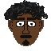
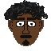

Instructions
Find and click on the target, the faster you find your target the better your score! You have three, ten second rounds and a different target every time.
If you run out of time or miss you score ZERO.
This game is best played on the firefox browser at or above 1080p monitor resolution.
Reference and Acknowledgements
This Game is loosely based on
singled out by Matt Glanville.
The Font used is
Quirky robot by Star Kwafie.
All Faces were created using
PixilArt
 
